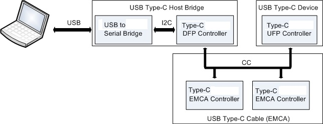

USB Type-C是新的USB-if标准，它解决了在使用今天的a型和b型电缆和连接器时所面临的几个挑战。USB类型c使用一个更细的连接器-测量高度只有2.4毫米-以允许增加消费者和工业产品的小型化。USB Type-C标准正在获得快速的支持，它支持小的表单元素、易于使用的连接器和电缆，能够传输多个协议，并提供多达100 w的电力传输。家庭的USB Type-C控制器与一个集成的Type-C无线电收发机和一个可编程的手臂?皮质?M0核心。这些控制器可以帮助你更快地将符合标准的电缆、电缆、笔记本、平板电脑和显示器带到市场。更多关于这些设备的信息可以在这里找到: USB Type-C
工具配置实用程序是一个Windows应用程序，允许用户配置使用工具实现的Type-C设备的参数。该工具还允许在控制器上显示固件更新。
设备配置和固件更新是通过将Type-C控制器连接到主机，通过USB到I2C桥接设备完成的。这个桥与Type-C下游的面向端口(DFP)控制器是一个USB Type-C主机桥，连接类型c外围设备到主机。Type-C电缆本身是一种智能的电子标记电缆组件(EMCA)，它可以嵌入一对Type-C EMCA控制器。工具配置实用程序可以通过Type-C主机桥上发布的一组供应商定义的CC消息(VDMs)来配置EMCA控制器的功能。
由于USB Type-C显示的东东没有任何标准的USB功能，一个USB公告板设备被用来向主机报告dongle的功能和状态。这个工具吗?配置实用程序还可以对显示软件中使用的USB公告板和USB- pd控制器进行配置和固件更新。